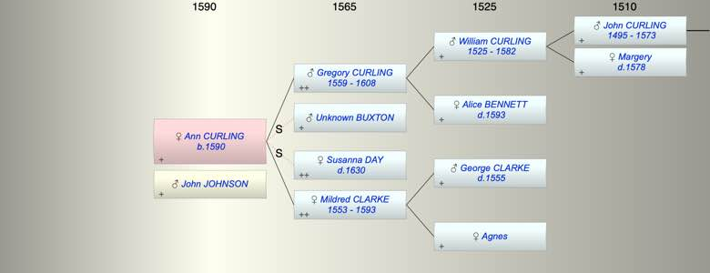

| [Index] |
| Ann CURLING (1590 - ) |
|  |
| b. 1590 at Minster |
| +. John JOHNSON |
| Parents: |
| Gregory CURLING (1559 - 1608) |
| Mildred CLARKE (1553 - 1593) |
| Siblings (7): |
| WIlliam CURLING (1587 - ) |
| Alice CURLING (1589 - ) |
| John CURLING (1592 - 1640) |
| Dorothy SAUNDER (1584 - ) |
| Suzanna SAUNDER (1585 - ) |
| Bartholomew SAUNDER (1587 - ) |
| Margaret SAUNDER (1589 - ) |
| Events in Ann CURLING (1590 - )'s life | |||||
| Date | Age | Event | Place | Notes | Src |
| 1590 | Ann CURLING was born | Minster | bap Minster 4 Oct 1590 | ||
| 1593 | 3 | Death of mother Mildred CLARKE (aged 40) | St Laurence | buried 5 Aug 1593 St Laurence | |
| 1608 | 18 | Death of father Gregory CURLING (aged 49) | St Laurence | buried 31 May 1608 ex FMP PR | |
| 1630 | 40 | Death of step mother Susanna DAY | |||
| Created on a Mac™ using iFamily for Mac™ on 8 Oct 2023 |